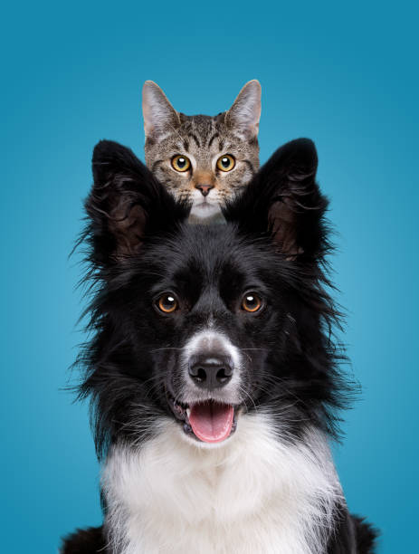

Essential Pet Care Tips
Nutrition: The Foundation of Pet Health
Proper nutrition is crucial for your pet's overall health and well-being. Choose high-quality pet food appropriate for your pet's age, size, and activity level. Always provide fresh water and avoid overfeeding. Consult with your veterinarian to determine the best diet for your pet's specific needs.
Regular Exercise: Keeping Your Pet Fit and Happy
Daily exercise is essential for your pet's physical and mental well-being. For dogs, this might include walks, runs, or play sessions. Cats benefit from interactive toys and climbing structures. Aim for at least 30 minutes of activity per day, adjusting based on your pet's age and health status.
Grooming: More Than Just Looking Good
Regular grooming keeps your pet clean and healthy. Brush your pet's coat regularly to prevent matting and reduce shedding. Trim nails as needed, and don't forget about dental care - brush your pet's teeth or provide dental chews to maintain oral health.
Preventive Care: Staying Ahead of Health Issues
Schedule regular veterinary check-ups to catch and prevent health issues early. Keep vaccinations up to date and follow your vet's recommendations for preventive care, including flea, tick, and heartworm prevention.
Mental Stimulation: Keeping Your Pet's Mind Active
Provide plenty of mental stimulation through toys, puzzles, and training sessions. This helps prevent boredom and can reduce problem behaviors. Rotate toys regularly to keep your pet interested and engaged.
Love and Attention: The Most Important Care of All
Finally, remember that your love and attention are crucial components of pet care. Spend quality time with your pet each day, offering affection and reinforcing your bond. This not only makes your pet happy but can also alert you to any changes in their behavior or health.
By following these essential pet care tips, you'll be well on your way to ensuring a long, healthy, and happy life for your furry friend. Remember, every pet is unique, so always consult with your veterinarian for personalized advice on caring for your specific pet.